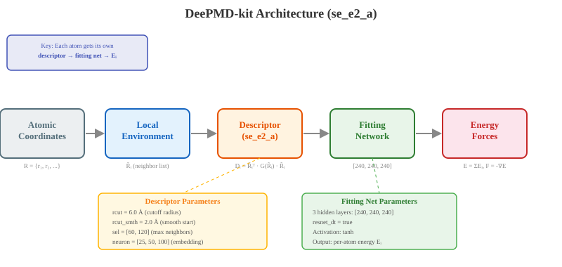
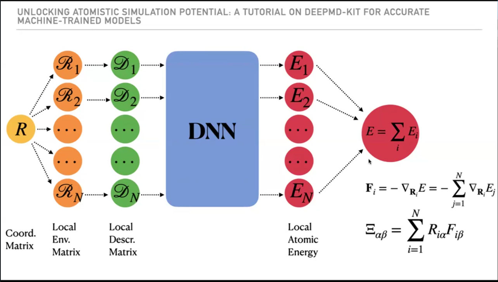
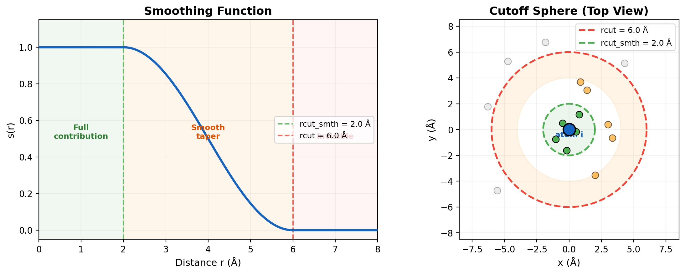
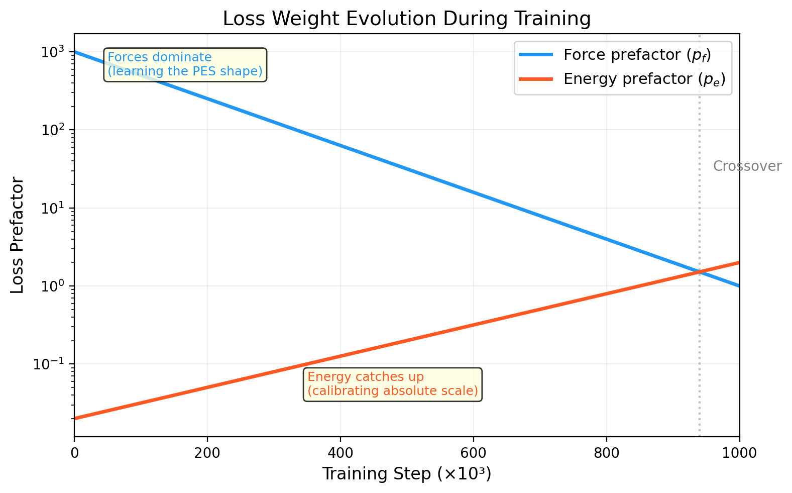

Ch 2: The DeePMD Architecture#
I’ll be straight with you. You don’t need this chapter to train a model. You can skip to Ch 3 right now, copy the JSON, run dp train, and get a working potential.
But “working” and “good” are different things. And when your loss curve flatlines at iteration 200,000, or your MD simulation launches an atom into the vacuum at Mach 4, you will come back here. I promise. I did.
So let’s do this now. Not the math. Not the full derivation. Just enough to understand what every knob in the training JSON actually controls, and why you’d turn it.
Design Principles#
Four non-negotiable constraints shaped this architecture. Every design choice traces back to one of these.
Extensivity: Total energy = sum of per-atom energies. Each atom’s contribution depends only on its local environment. Train on 32 atoms, predict on 32,000. The model doesn’t care.
Continuity: The energy surface must be smooth and differentiable. Forces are the negative gradient of energy. No smooth surface, no valid forces. Period.
Symmetry invariance: Rotate the system, translate it, swap two identical atoms. The energy stays the same. The architecture enforces this by construction, not by hoping the network learns it.
Learnable representation: A deep neural network maps local atomic environments to energies, trained against DFT data. This is the part that actually learns.
You might look at that list and think, “Sure, obvious.” It’s not. Classical force fields satisfy the first three but can’t learn arbitrary interactions. A naive neural network could learn anything but violates the symmetries. Getting all four simultaneously is the whole engineering challenge. And that’s not a small thing.
The Big Picture#
Here’s the entire model in one sentence: given atomic positions, predict the total energy. Forces come for free as derivatives.
Two stages. That’s all.
Descriptor: Each atom looks around at its neighbors and encodes what it sees into a fixed-size numerical vector. This is perception.
Fitting Network: That vector goes into a neural network, which outputs a single number: this atom’s energy contribution. Sum all the contributions. Total energy.
Descriptor. Fitting. Energy. And that’s the whole trick.
Positions --> [Descriptor] --> Environment Matrix --> [Fitting Net] --> Per-atom Energy --> Sum --> Total Energy
|
Gradient --> Forces
{kind=link}

Fig. 3 The DeePMD-kit pipeline from atomic coordinates to energy and forces. Each atom’s local environment is encoded by the descriptor, then mapped to a per-atom energy contribution through the fitting network. Total energy is the sum; forces are computed as gradients.#
Let me unpack that diagram. For each atom \(i\), the full coordinate matrix \(\mathbf{R}\) gets sliced into a local environment matrix \(\mathbf{R}_i\) (just the neighbors within rcut). The embedding network transforms each \(\mathbf{R}_i\) into a descriptor matrix \(\mathbf{D}_i\). The fitting network (the DNN) takes \(\mathbf{D}_i\) and outputs a local energy \(E_i\). Total energy: \(E = \sum_i E_i\). Forces: \(\mathbf{F}_i = -\nabla_{\mathbf{R}_i} E\). Virial stress: \(\Xi_{\alpha\beta} = \sum_i R_{i\alpha} F_{i\beta}\).
One architecture. Energy, forces, and stress all fall out of it. This is the part that made it click for me. You define one thing (energy as a function of positions) and three physical quantities emerge from calculus alone.
{kind=link}

Fig. 4 The complete DeePMD pipeline. Atomic coordinates \(\mathbf{R}\) are decomposed into per-atom local environment matrices, transformed by the embedding network into descriptors, then fed through the DNN to produce per-atom energies. Energy, forces, and virial stress are all derived from this single architecture. Figure from DeePMD-kit tutorial.#
The Descriptor: How Atoms See Their Neighbors#
The descriptor we use is called se_e2_a. Smooth edition, two-body, with angular information. It’s the workhorse. The vast majority of published DeePMD papers use it.
You might think the descriptor just stores distances to neighbors. Nope. It encodes distances and angles into a learned representation. Here’s what’s actually happening.
Every atom looks around within a sphere of radius rcut. It sees neighbors, their element types, their relative positions. The descriptor takes all of that raw spatial information and compresses it into a fixed-size vector the neural network can work with.
Think of it as peripheral vision. Each atom scans out to 6 Angstroms (in our case), notices who’s nearby, and builds a structured summary of its neighborhood. Three properties make this work:
Smooth: No hard cutoff. Neighbor contributions taper smoothly to zero between
rcut_smthandrcut. This matters more than you think. A discontinuous potential creates infinite forces at the cutoff boundary. Your MD simulation doesn’t “crash” in the traditional sense. It just produces garbage. Silently.Invariant: Rotate the entire system 90 degrees. Translate it by 10 Angstroms. The descriptor stays identical. The energy of a water molecule is the same whether it’s pointing up or sideways. The architecture guarantees this.
Permutation symmetric: Swap two identical carbon atoms. Nothing changes. The architecture handles this automatically.
How? Translational invariance comes from using relative positions instead of absolute coordinates. Rotational invariance is baked in through products of the environment matrix (\(\tilde{R} \times \tilde{R}^T\)) that are inherently rotation-independent. Permutational invariance comes from the embedding network processing each neighbor through the same network regardless of ordering.
Three hard physics constraints satisfied by construction. Not learned. Not approximate. Exact.
The Descriptor Parameters#
Here’s a real config. For Ar (single element), this is simple: one sel value. For multi-element systems like water, you get one sel per element type. Here’s the water descriptor from our tutorial:
"descriptor": {
"type": "se_e2_a",
"rcut": 6.0,
"rcut_smth": 0.5,
"sel": [46, 92],
"neuron": [25, 50, 100],
"axis_neuron": 16,
"resnet_dt": false
}
Every field matters. Let’s trace through this.
Config Walkthrough
rcut: 6.0: The cutoff radius in Angstroms. Anything beyond 6 Angstroms is invisible to the atom. Gone. Doesn’t exist. For covalent bonds (C-C is ~1.4 Angstroms, C-H is ~1.1 Angstroms), 6 Angstroms captures several neighbor shells. For van der Waals, it covers the most important range but misses longer-range dispersion. For Coulomb interactions, 6 Angstroms is too short; you need specialized long-range methods.
Choosing rcut: 6.0 for organic/covalent systems. 8 or 9 for metals or ionic systems. Start there. Adjust later. Don’t go past 9 or 10 unless you really know why. The number of neighbors scales as \(r^3\), so bumping from 6 to 9 roughly triples your neighbor count. Training cost scales with that.
rcut_smth: 2.0: The smoothing width. A neighbor at distance \(r\) fades smoothly from full contribution to zero between \(r = rcut - rcut\_smth = 4.0\) Angstroms and \(r = rcut = 6.0\) Angstroms. Leave this at 2.0. I have never had a reason to change it.
sel: [46, 92]: Maximum number of neighbors per element type. sel[0] = 46 means up to 46 Oxygen neighbors within rcut. sel[1] = 92 means up to 92 Hydrogen neighbors. The order matches type_map. Not optional. Not a suggestion. Get it wrong and the model silently trains on incomplete neighbor information.
Why 46 and 92? In liquid water, each atom typically sees ~30 oxygens and ~60 hydrogens within 6 Angstroms. We pad by about 50% for safety. For our single-element Ar model, sel: [80] (one value, one element type).
neuron: [25, 50, 100]: The embedding network architecture. Three layers, 25 then 50 then 100 neurons. This network learns how to encode the raw distance and angle information into a useful representation. Larger networks capture more complexity but train slower and risk overfitting on small datasets.
axis_neuron: 16: Controls the angular information encoding dimensionality. 16 is the standard default. I’ve tried increasing it. It rarely helps. Decreasing it can hurt for systems with strong angular dependence (like covalent bonds with specific bond angles).
{kind=link}

Fig. 5 Left: The smoothing function s(r) tapers atom contributions between rcut_smth (2.0 Angstroms) and rcut (6.0 Angstroms). Right: Top-down view of the cutoff sphere. Green atoms contribute fully, orange atoms are tapered, gray atoms beyond the cutoff are invisible to the descriptor.#
Key Insight
sel is a source of silent errors. This one will bite you. If you set sel = [20, 20] but your densest configuration has 40 carbon neighbors within rcut, DeePMD will quietly use only the closest 20 and ignore the rest. No warning. No error message. Just subtly wrong forces in dense regions. I stared at bad force predictions for two days before I realized my sel was too low.
Check your maximum neighbor counts before setting sel:
# After converting data with dpdata
import dpdata
d = dpdata.LabeledSystem('your_data/', fmt='deepmd/npy')
# Check neighbor counts for your rcut
print(f'Frames: {len(d)}')
print(f'Max atoms: {max(len(f) for f in d["coords"])}')
Or just set sel generously. The cost of a larger sel is more memory during training, not slower inference. Memory is cheap. Bad forces are not.
The Fitting Network: From Environment to Energy#
The descriptor tells the atom what it sees. The fitting network decides what that means.
It’s a standard fully-connected neural network. Input: the descriptor vector (that fixed-size encoding of the neighborhood). Output: one number. The per-atom energy contribution. One number per atom. Sum them. Total energy. That’s the entire fitting network’s job.
"fitting_net": {
"neuron": [240, 240, 240],
"resnet_dt": true
}
neuron: [240, 240, 240]: Three hidden layers, 240 neurons each. That’s a lot of neurons. Here’s why it needs to be.
System complexity |
Typical fitting net |
|---|---|
Simple (single element, bulk metal) |
|
Medium (small molecules, water) |
|
Complex (interfaces, multi-element) |
|
A complex multi-element system has bonding wells, diffusion barriers, and cross-element interactions all competing at once. A small network can’t capture that complexity. It underfits, the force RMSE plateaus, and you sit there wondering what went wrong. I learned this the expensive way. Three separate training runs with [100, 100, 100] before I accepted the network was too small for the physics.
resnet_dt: true: Enables residual connections with a learnable scaling factor. Skip connections that help gradients flow through deep networks. Leave it on for the fitting net. Always. There is no good reason to turn it off.
Key Insight
Each element type gets its own fitting network. When you have type_map: ["C", "H"], DeePMD internally creates two separate fitting networks. Same architecture (neuron list), independent weights. Carbon atoms go through one network. Hydrogen atoms go through a different one. They learn completely different energy contributions.
This is also why the model is size-extensive. Total energy = sum of per-atom contributions. Train on 32 atoms, predict on 32,000. The per-atom networks never see the total system size. They don’t know and they don’t care.
The Loss Function: What the Model Optimizes#
Here’s where people get burned.
The model needs to know how wrong it is at every training step. The loss function defines “wrong.” And the way you define “wrong” determines what kind of model you get. Pay attention to this next part.
"loss": {
"type": "ener",
"start_pref_e": 0.02,
"limit_pref_e": 2.0,
"start_pref_f": 1000,
"limit_pref_f": 1.0,
"start_pref_v": 0.0,
"limit_pref_v": 0.0
}
The total loss is a weighted sum:
where \(\Delta E\), \(\Delta F\), \(\Delta V\) are the errors in energy, forces, and virial stress. The \(p\) values are the prefactors. They control what the model pays attention to.
Here’s where it gets interesting. The prefactors change during training.
Early training (start_pref): Forces dominate. \(p_f = 1000\), \(p_e = 0.02\). The model is almost exclusively trying to get forces right. Why? Think about the information content. Each frame has \(3N\) force components but only 1 energy value. Forces are where the signal is. Forces define the shape of the potential energy surface.
Late training (limit_pref): Energy catches up. \(p_f = 1.0\), \(p_e = 2.0\). By now the forces are already good. The model has learned the PES shape. What’s left is calibrating the absolute energy scale, which matters when you compare different configurations.
So the model learns the landscape first, then adjusts the elevation. Shape first, calibration second. That’s genuinely elegant.
Virials are zeroed out in our config. We’re studying a 2D slab with vacuum in the z-direction. The stress tensor isn’t physically meaningful in that geometry. For bulk 3D systems where you need accurate pressure, set start_pref_v = 0.02 and limit_pref_v = 1.0.
Training phase |
Force prefactor |
Energy prefactor |
What the model focuses on |
|---|---|---|---|
Early (step 0) |
1000 |
0.02 |
Getting PES shape right through forces |
Late (final step) |
1.0 |
2.0 |
Calibrating absolute energy scale |
{kind=link}

Fig. 6 Loss prefactor evolution during training. The force prefactor starts high (1000) and decays to 1, while the energy prefactor grows from 0.02 to 2. Early training focuses on learning the PES shape through forces; later training calibrates absolute energies.#
This animation shows exactly what that looks like in practice:
How DeePMD learns a PES. Phase 1: the model gets the shape right (forces/slopes match) but at the wrong absolute energy. Phase 2: the energy prefactor kicks in and the curve slides down to match DFT. Shape first, elevation second.
Makes sense when you think about it. But I didn’t think about it my first time through. I copied the defaults and got lucky.
Warning: Energy Scale
The loss function doesn’t know your physics. It minimizes weighted RMSE across all training frames equally. If your training set mixes systems with very different per-atom energies (e.g., isolated molecules at ~-16 eV/atom vs dense slabs at ~-278 eV/atom), the model focuses on reducing the absolute error on the larger values because those dominate the RMSE. The small-system forces could be terrible and the total loss would barely flinch. See Energy Scale Traps for the full story.
The model isn’t broken. The loss function is doing exactly what you told it to. You just told it the wrong thing. The fix is atom_ener reference corrections so the model trains on residual energies that live on comparable scales. We cover this in detail in Energy Scale Traps.
The Learning Rate: How Fast the Model Learns#
"learning_rate": {
"type": "exp",
"start_lr": 0.001,
"stop_lr": 5e-08,
"decay_steps": 5000
}
Exponential decay from \(10^{-3}\) to \(5 \times 10^{-8}\). At step \(t\):
Early training: big learning rate, big jumps. The model is stumbling around the loss landscape trying to find the right neighborhood. Crude. Fast. Necessary.
Late training: tiny learning rate, tiny adjustments. The model found the right neighborhood; now it’s looking for the exact house. Too large a step here and it overshoots, bouncing back and forth across the minimum forever.
decay_steps = 5000 controls how often the rate updates. It doesn’t change the total decay, just smooths the staircase. Leave it.
For most systems, these values work out of the box. The only time I’ve needed to change them: training diverged (NaN in the loss). If that happens, halve start_lr to 0.0005. That has fixed it every time so far. Start there. Adjust later.
Putting It Together: The Training Loop#
Here’s what dp train actually does. No magic. Just a loop.
Load training data from
training_data.systems(in the dpgen context, this gets filled automatically).Initialize descriptor and fitting network with random weights.
For each training step (up to
numb_steps): a. Sample a batch of frames from the training data. b. Forward pass: positions go through the descriptor, then the fitting net, out comes predicted E and F. c. Compute loss: compare predictions against DFT reference values. d. Backward pass: compute gradients of loss with respect to every weight in the network. e. Update weights using Adam optimizer at the current learning rate. f. Everydisp_freqsteps, write the current loss tolcurve.out. g. Everysave_freqsteps, save a checkpoint.Training done. Run
dp freezeto convert the saved weights into a deployable.pbfile.
That’s your model. Frozen and ready.
The file you’ll live in is lcurve.out. Columns: step number, learning rate, energy RMSE (training), energy RMSE (validation), force RMSE (training), force RMSE (validation). A healthy training run shows all RMSE values decreasing smoothly. If the training RMSE drops but validation RMSE stalls or rises, that’s overfitting. The model is memorizing instead of learning. More data fixes that. A bigger network does not.
Read that again. Seriously. The instinct when a model isn’t good enough is always “make it bigger.” That instinct is wrong. If training error is low and validation error is high, the network is already big enough to represent the physics. It just doesn’t have enough examples to generalize from. More data. Not more neurons.
We’ll look at real learning curves in Ch 4. You’ll see exactly what “healthy” and “sick” look like.
Choosing Your Architecture: Rules of Thumb#
Starting from scratch? Use this table. Don’t overthink it on your first model. I’m serious.
Parameter |
Simple system |
Complex system |
|---|---|---|
|
6.0 |
6.0-8.0 |
|
2.0 |
2.0 |
|
Check + pad 20% |
Check + pad 20% |
Descriptor |
|
|
Fitting |
|
|
|
400,000 |
1,000,000 |
|
0.001 |
0.001 |
|
1000 |
1000 |
Start small. If the model underfits (force RMSE plateaus too high), increase the network size. If it overfits (training RMSE way below validation RMSE), you need more data, not more neurons. I cannot stress this enough. I wasted a week making the network bigger when the real problem was 30 training frames. Thirty. Don’t be me.
What’s Next#
You now know what every piece does. Descriptor for perception. Fitting network for prediction. Loss function for feedback. Learning rate for pacing. Clean.
In Ch 3, we prepare actual DFT data for training. In Ch 4, we run dp train and watch the learning curve in real time. The theory is done. Now we build.